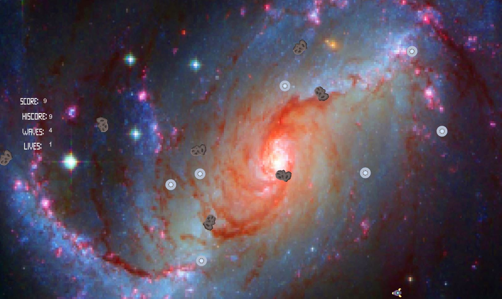

May 21, 2019

In this course, I have learned many things about game designs that were very interesting and helpful. With the presentations, I learned about the evolution about many things such as pixel art, Fifa game series, esports, and many more. What stood out to me was the stimulation especially on how it was used on NYPD to experience a real life situation and practicing on it. I never played any fifa games and I never knew what esports really was about so after these slides I learned many things from it. I love the evolution of the game and the participation of esports.
A few interesting things I learned was learning how to create a game. Learning about the process of creating the game was what caught my attention especially on how we first start off with paper prototype. On the paper prototype game, thinking of what kind of game to create was difficult. When I worked on the UFOs game with my partner William, we also started off with a paper prototype to help us get an idea. Thinking about the fun and the challenge was something also. When we created our game, we had to think how the enemy distribution on each level will work. Even though it was difficult, I thought the process was very fun at the same time.